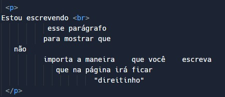

Antes de falarmos em quebras de linha, é importante dizer que, em HTML, não importa o jeito que você escrever o seu texto, ele não considerará as quebras de linha e os espaços de mais de um caractere. Olhe o exemplo abaixo:
Código HTML:

Como aparece na página:

Portanto, não basta dar um Enter para quebrar a linha, motivo por qual existe a tag br, que tem esse propósito. Diferente da maioria das tags, a tag br não tem fechamento, isso porque ela não recebe conteúdo.
